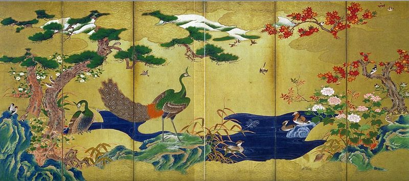
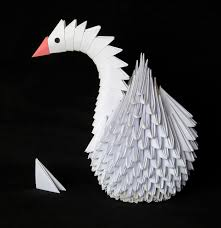
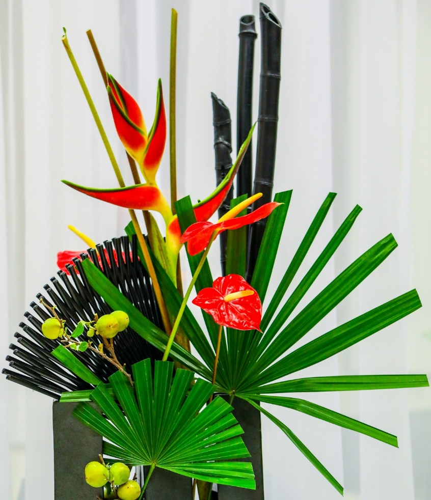
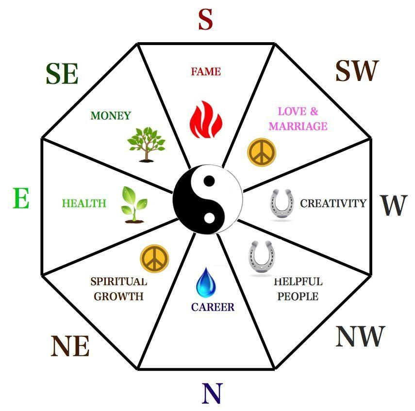

Pictura japoneză este încărcată de farmecul asiatic atunci când este privită dintr-o perspectivă pur decorativă. Diferite școli și stiluri de pictură, nenumărate medii, influențele puternice Zen și folosirea termenilor specifici în japoneză fac această artă impresionantă greu de înteles și de învățat de cineva din afara culturii Țării Soarelui Răsar
Suibokuga este termenul pentru pictura în cerneală neagră, adoptată din China și influentata puternic de buddhismul zen. În timpul secolului XV, aceasta tehnică a început să capete o dimensiune niponă tot mai accentuată
Stilul nanga a fost foarte influent la începutul secolului XIX, adepții acestuia, pictând peisaje idealizate, păsări, flori, totul pentru o elită culturală, fiind marcați de influența chineză.
Principalele medii folosite de pictorii japonezi erau diverse. Un exemplu este reprezentat de suluri orizontale numite emakimono. Cuvântul înseamnă chiar "imaginea unui lucru împăturit". Emakimono erau create prin lipirea unor pagini pentru a forma o rola lungă. Imaginile erau privite de la dreapta la stânga, fiind cele mai vechi forme de opere de artă din Japonia.
Origami constituie arta plierii hârtiei colorate în modele de creaturi vii, obiecte neînsuflețite sau forme decorative abstrac
cuvântul origami, de origine japoneză, este format din oru care are sensul de a îndoi și kami cu sensul de hârtie, deci “hârtie îndoită”. Numele de origami a fost adoptat în anul 1880, până atunci arta plierii hârtiei fiind denumită orikata. Formele care pot fi realizate prin această artă sunt legate de imaginația celui care pliază hârtia, dar există și categorii de forme tradiționale care includ flora și fauna. Arta origami din zilele noastre acoperă o zonă largă de forme, de la ceasuri cu cuc și dragoni, până la forme simple care exprimă mai degrabă spiritul decât forma unei imagini.


Ikebana este tehnica artistică de aranjare a florilor, și altor părți ale plantelor, în vase, după anumite principii, arta aranjamentelor florale în stil japonez, arta tablourilor vii. Ikebana este o artă care cultivă minimalismul
Ikebana este concretizarea cea mai reprezentativă a cultului pentru frumos, prezent de-a lungul istoriei în universul spiritual japonez. S-a conformat întotdeauna, față de celelalte arte, dar și pretutindeni, situațiilor noi impuse de evoluția simțului estetic al japonezilor. Ikebana este aducerea vieții vegetale la dimensiunile unei încăperi, a unei vaze. Elementele florale dintr-un aranjament sunt puse în vază cu intenția transpunerii lor într-o nouă viață, încercându-se recrearea universului lor natura
Aranjarea florilor este o expresie a vitalității, a competiției neîntrerupte dintre viață și moarte, o artă încărcată de simboluri care a devenit o parte indispensabilă a interioarelor japoneze. Plăcerea pentru aranjarea florilor caută să exprime pacea sufletească, echilibrul din natură și al naturii cu omul. În aranjamentul florilor se urmăresc câteva reguli specifice și necesare cum ar fi forma imperfectă, neregularitatea, asimetria, înfățișarea simplă, săracă, dar în același timp delicată și fragilă
Feng shui (literalmente "vântul și apa") este un ansamblu de principii de geomanție, care afirmă că formele și mediul ambiant pot influența principiul qi (qi = suflu). Scopul este realizarea armoniei locurilor în care oamenii trăiesc, prin analiza fluxurilor de energie din mediul înconjurător. Bazându-se pe teoria celor 5 elemente (pământ, metal, apă, lemn, foc) și pe principiile yin și yang, expertul feng-shui încearcă să reechilibreze forțele care se manifestă local pentru a ameliora sănătatea, prosperitatea și comportamentul persoanelor.
Un qi positiv aduce noroc, un qi negativ aduce nenorocire. Cele patru centre de interes majore din feng shui sunt : bogăția, fericirea, longevitatea și copiii sănătoși.
